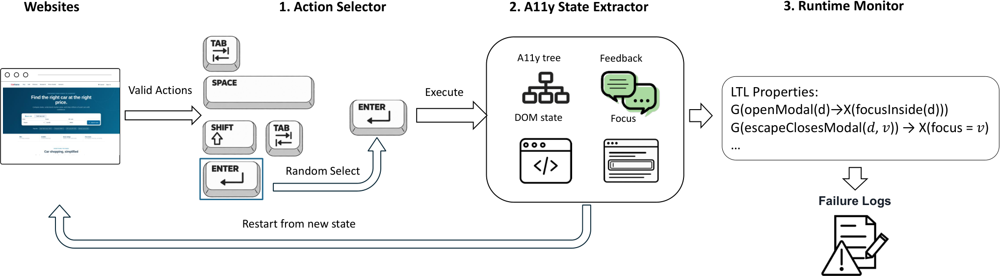

A11yLTLNav detects web accessibility navigation failures by checking explicit temporal rules while exploring keyboard interactions. The rules are grounded in studies with blind and low-vision users. Across 31 generated websites, 274 of 309 reported failures were confirmed correct (88.7% precision), without language-model inference during testing.
Abstract
Method
A11yLTLNav combines keyboard exploration, accessibility-state extraction, and runtime monitoring of temporal properties. Each reported violation records the triggering action and the observed state.

Example property: opening a dialog should move keyboard focus inside.
Temporal properties
G means “every time”; X means “in the next checked state”; d is the dialog. The checker observes the relevant state after the interaction settles.
Linear Temporal Logic (LTL) expresses rules about action sequences. Random testing tries varied sequences of available keyboard actions against those fixed rules. Each failure report records the interaction and resulting state.
Exploration does not guarantee that every failure will be found. Read the method.
Demos


Checker replay
00:03 · Focus stays outside. 01:47 · Escape does not close the player.
Full replay · Evidence & checker output
Focus restoration
After preparing the email

After closing the dialog

Full recording
All four annotated states
Text-editor navigation

An exit-path check needs more than one Tab press.
Evaluation
| Checker | Reported | Confirmed errors | False positives | Precision |
|---|---|---|---|---|
| AxeStatic | 18 | 17 | 1 | 94.4% |
| WAVEStatic | 68 | 34 | 34 | 50.0% |
| Adapted TaskAuditAgentic | 276 | 158 | 118 | 57.2% |
| A11yLTLNavRun 1 | 309 | 274 | 35 | 88.7% |
Confirmed errors were verified by human reviewers. Static checkers scanned the first page only; counts include findings relevant to blind and low-vision users. Paper · Table 4
Evaluation protocol
Reports were deduplicated by website, component, and checker. Two authors reviewed every report; disagreements were resolved through discussion. Precision is confirmed errors divided by reported findings, not recall.
Across three A11yLTLNav runs, precision ranged from 85.9% to 88.7%. No language-model inference was used during its testing. Detection depends on the paths explored and the state exposed by the browser.
These checks complement static tools and studies with screen-reader users. Read the full evaluation.